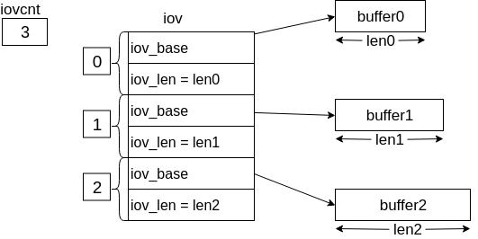

Linux系统编程:文件_高级文件IO调用
原子操作
原子操作(atomicity) —— 将某一系统调用所要完成的各个动作作为不可中断的操作，一次性加以执行。
所有系统调用都是以原子操作的方式执行的，内核保证了单个系统带哦用中的所有步骤都会作为独立操作而一次性加以执行，期间不会为其他进程或线程所中断。
因此，不同进程对同一个文件进行操作时，有可能出现不同步的现象。
int fd = open(argv[1], O_WRONLY);
if (fd != -1) {
// 如果文件存在，则退出
printf("[PID %ld] File \"%s\" already exists!\n", (long) getpid(), argv[1]);
close(fd);
} else {
// 如果文件不存在，则先休息5s，再创建文件
printf("[PID %ld] File \"%s\" don't exist yet!\n", (long) getpid(), argv[1]);
if (argc > 2) {
sleep(5);
printf("[PID %ld] Done sleeping!\n", (long) getpid());
}
// 创建文件
fd = open(argv[1], O_WRONLY | O_CREAT, S_IRUSR | S_IWUSR);
if (fd == -1)
errExit("open");
printf("[PID %ld] File \"%s\" created!\n", (long) getpid(), argv[1]);
}
如上面的代码，以写方式打开一个文件，如果 文件存在则退出，文件不存在则创建。现在人为的制造时间间隔 sleep(5) ，阻止这段代码的连续性。
$ ./atomicity atom.txt sleep &
[PID 1811] File "atom.txt" don't exist yet!
$ ./atomicity atom.txt
[PID 1825] File "atom.txt" don't exist yet!
[PID 1825] File "atom.txt" created!
[PID 1811] Done sleeping!
[PID 1811] File "atom.txt" created!
可以从结果上看到，两个进程都认为文件是自己创建的。上面只是人为的将时间间隔夸大为5s，在真实环境中，即使中间没有 sleep，CPU时间片也会被不同的进程争夺，其结果也一样。
在多进程同时对同一个文件(如日志文件)尾部添加数据时，需要将 文件偏移量的移动与数据写操作纳入同一个原子操作中，在 open 系统调用中添加 O_APPEND标识 能达到目的。O_APPEND标识 会使得每次write都在文件末尾进行。
几个文件系统调用
fcntl()
fcntl() 系统调用对一个打开的文件描述符执行一系列的控制操作。返回值根据cmd的不同而不同。
int fcntl(int fd, int cmd, ... /* arg */ );
cmd 所支持的参数很多：
- F_GETFL - 获取文件状态标志，包括O_READ、O_WRITE、O_APPEND等。
- F_SETFL - 设置文件状态标志。
fcntl() 系统调用的使用场景：
- 文件不是应用程序打开，所以无法使用open调用来控制文件的状态标志。
- 文件描述符的获取是通过open之外的系统调用获得。
dup()、dup2()、dup3()
dup()、dup2()、dup3() 这三个系统调用都是用来复制旧的文件描述符给新的文件描述符。
#include <unistd.h>
int dup(int oldfd);
int dup2(int oldfd, int newfd);
#define _GNU_SOURCE /* See feature_test_macros(7) */
int dup3(int oldfd, int newfd, int flags);
- dup(int oldfd)
- 复制旧的文件文件描述符，返回新的文件描述符，两者都指向 文件打开表 的同一位置。
- 成功返回新的文件描述符号，操作失败或者旧的文件描述符不存在则返回-1。
- dup2(int oldfd, int newfd)
- 复制旧的文件描述符，并将副本的编号设置为newfd。如果newfd已被占用，会先关闭newfd指待的文件。
- 成功返回新的编号，失败返回-1。
- dup3(int oldfd, int newfd, int flags)
- dup3需要添加 #define _GNU_SOURCE 预编译。
- 效果和dup2一样，flags标志位只支持 O_CLOEXEC。
- O_CLOEXEC模式打开的文件描述符 在执行exec调用新程序中关闭，且为原子操作。
- O_CLOEXEC模式打开的文件描述符，在通过fork调用产生的子进程中不被关闭。
- 成功返回新的编号，失败返回-1。
pread()、pwrite()
pread()、pwrite() 实现的功能和 read()、write() 类似。
#include <unistd.h>
ssize_t pread(int fd, void *buf, size_t count, off_t offset);
ssize_t pwrite(int fd, const void *buf, size_t count, off_t offset);
- pread()、pwrite()会在 offset指定的便宜位置(相对于SEEK_SET) 进行操作。
- pread()、pwrite()在调用前会保存文件的偏移位置，完成系统调用后，文件偏移仍为调用前的值。
off_t orig;
orig = lseek(fd, 0, SEEK_CUR);
lseek(fd, offset, SEEK_SET);
read(fd, buf, count);
lseek(fd, orig, SEEK_SET);
pread 调用的操作类似于上面的代码，不过上面的代码进行了4次系统调用，而 pread 只有一次。当然，相对于I/O操作所用的时间，进程状态切换的时间可以忽略。
在 同一个进程下的多个线程对同一文件进行操作时，使用 pread和pwrite 系统调用不会使文件的偏移位置改变。
代码示例 -> Chapter_05_pread_pwrite.
readv()、writev()
readv()、write() 系统调用实现的是 分散输入 和 集中输出 的功能，可以一次性对多个缓冲区的数据进行操作。
#include <sys/uio.h>
ssize_t readv(int fd, const struct iovec *iov, int iovcnt);
ssize_t writev(int fd, const struct iovec *iov, int iovcnt);
ssize_t preadv(int fd, const struct iovec *iov, int iovcnt, off_t offset);
ssize_t pwritev(int fd, const struct iovec *iov, int iovcnt, off_t offset);
ssize_t preadv2(int fd, const struct iovec *iov, int iovcnt, off_t offset, int flags);
ssize_t pwritev2(int fd, const struct iovec *iov, int iovcnt, off_t offset, int flags);
iovec结构体的定义如下：
struct iovec
{
void *iov_base; /* Pointer to data. */
size_t iov_len; /* Length of data. */
};
iov_base 为缓冲区的指针，iov_len 为缓冲区的大小。
readv和writev 调用前，需要先设置缓冲区。
struct iovec iov[3];
iov[0].iov_base = &my_struct;
iov[0].iov_len = sizeof(my_struct);
total_read += iov[0].iov_len;
iov[1].iov_base = &x;
iov[1].iov_len = sizeof(x);
total_read += iov[1].iov_len;
iov[2].iov_base = str;
iov[2].iov_len = STR_SIZE;
total_read += iov[2].iov_len;

- iovcnt 参数为 待读取或写入的缓冲区总的字节数，执行成功会返回真正读取或写入的字节数，失败则返回-1。
- preadv和pwritev 和上面的 pread和pwrite 一样，需要指定处理的偏移位置，并且不会改变前后的文件的偏移值。
- preadv2和pwritev2 比上面的多了一个指定文件标示的参数。
代码示例 -> Chapter_05_readv
truncate()、ftruncate()
truncate()、ftruncate() 系统调用的目的是 将文件设置成指定的大小。
#include <unistd.h>
#include <sys/types.h>
int truncate(const char *path, off_t length);
int ftruncate(int fd, off_t length);
- 如果 length 小于文件长度，则截取length长度作为文件的数据。
- 如果 length 大于文件长度，则在文件后面添加 空字节或者文件空洞。
- truncate调用使用的是 文件的路径 作为参数。
- ftruncate调用使用的是 文件描述符 作为参数。
大文件读写
对于32位的系统来说，文件的大小已经被限定 2GB。现在的64为操作系统，理论上能够操作的最大文件大小为 2^33GB。
在操作大文件时，使用的系统调用通常会在末尾加上 64，以作为区别。例如：fopen64()、open64()、lseek64()、truncate64()...
课后习题
// todo
总结
- 每个系统调用都是原子性操作，内核会将系统调用过程中的一系列操作作为连续操作，在此期间，其他进程或线程无法占用CPU时间片。
- 尽量使用原子操作的系统调用代替 相同功能的多个系统调用组合的形式。
- 打文件I/O操作需要使用大文件的系统调用。